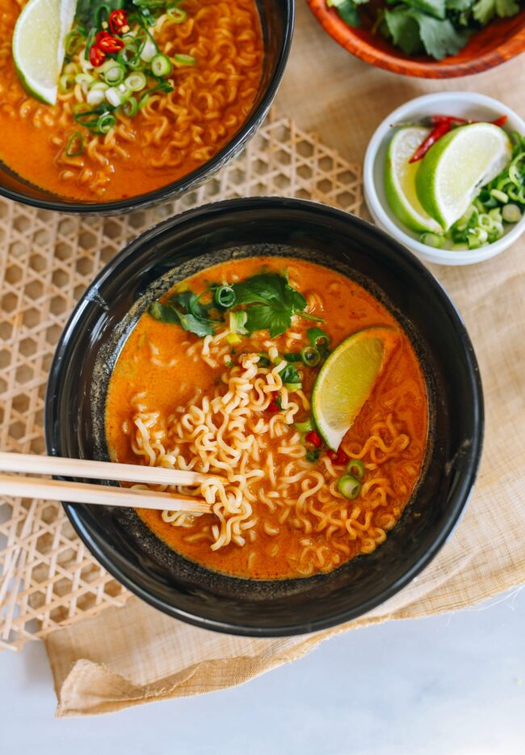

Upgraded Instant Ramen

Upgraded Instant Ramen
Instant rammen noodles spiced up with veggies and a soft boiled egg.
Ingredients
- 4 cups water
- 8 ounces fresh mushrooms, sliced
- 2 tablespoons minced garlic
- 2 tablespoons soy sauce
- 2 packs chicken flavored instant ramen
Directions
- Set aside noodles and combine all other ingredients in a large pot. Bring to a boil and add noodles. Cook until noodles are tender yet firm to the bite.
- Reduce heat to a simmer and cook until vegetables are tender, about 10 minutes.